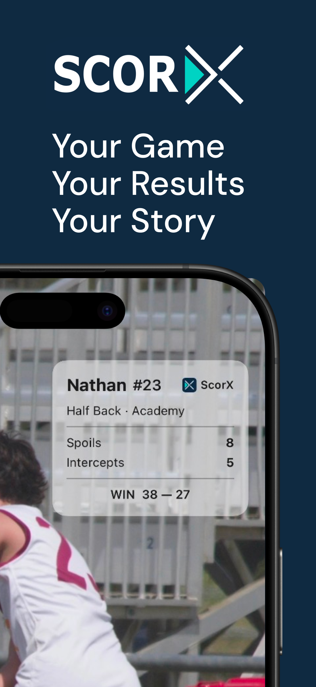
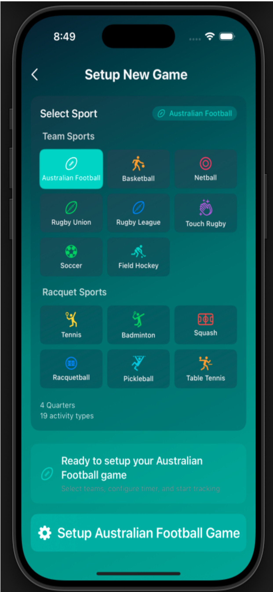

{% if post.category %}
{{ post.category }}
{% endif %}
{{ post.title }}
{{ post.excerpt | strip_html | truncatewords: 28 }}
Read more →ScorX turns every game into proof — youth sports stats tracked from the sideline by you, shared as a player card the whole family will love. Live game scoring and player statistics for AFL, basketball, netball, rugby and 16 sports.
Built in Australia for community sport. Free on the App Store.

This time, you'll know exactly how they went.
Open ScorX, pick your kid's game, and you're ready. No setup, no spreadsheet, no notepad.
Live stats as it happens — every tackle, goal and intercept tapped from where you're standing.
Their player card is ready to share. Into the family group chat before they've finished the oranges.
Grandma's commented. And every game adds another chapter to their season story.
Three steps from sideline to group chat. Works for AFL, basketball, netball, rugby and 16 sports — fully offline at the ground.
Name, number, sport. Setup takes less than 2 minutes — you'll be done before the warm-up is.
Big buttons for the stats that matter in their sport. Tap as it happens, from wherever you're standing.
ScorX turns the game into a player card automatically. One tap to share it with the people who care.

Add Your Player

Tap Stats Live

Share at the Siren
You're not a stats person. You don't need to be.
Every game you record compounds into your kid's development story — so by round 18, you'll know exactly how they've improved.
Every game archived automatically — per-game stat breakdowns and activity timelines, searchable by player, date and sport. Free, with no game limits.
Watch the numbers move across the season: tackles up, turnovers down, trend indicators on every athleticism metric. Real improvement, made visible.
ScorX Premium reads the season story and tells you what to work on next — training focus areas built from their actual games, not generic drills.
Every scoring, tracking, and team management tool is free — no paywall, no credit card. ScorX Premium adds AI training intelligence, advanced analytics, and shareable graphics.
Run your team. Record every game.
No credit card. No trial. No artificial limits.
Turn every game into your child's development story.
Only A$4.16/month
or A$4.99/month billed monthly • Prices in AUD
Cancel anytime with one tap
Your data exports with you
Team tools cost your club nothing — unlimited teams, unlimited players, unlimited games. Send match invitations and your parents become your stats team: each family records their own kid, you get the whole squad's data in real time.
Set Up Your Team in 2 MinutesFair question. Here's the honest answer.
ScorX isn't surveillance — it's the same care that gets you to every game, pointed at helping them improve. The data serves their development, not your scrutiny.
Player cards measure your kid against one person: themselves last month. There are no leaderboards and no other people's kids — just their own progress, worth sharing.
You haven't missed a Saturday all season. ScorX just means all that showing up adds up to something they can look back on.
Yes! ScorX has full offline functionality. Score games anywhere without internet connection. Your data syncs automatically via iCloud when you're back online.
ScorX analyses your game statistics to identify skill development priorities and training focus areas. Recommendations update every 30 days or after 5 new games, ensuring training stays aligned with actual performance gaps. Available on ScorX Premium.
Not at all! The average user sets up their first team roster in under 2 minutes. Just add player names and you're ready to start scoring.
ScorX Free is always free with no artificial limits — coaches never need to pay. ScorX Premium includes a 30-day free trial with no credit card required. Cancel anytime with one tap.
Yes. ScorX Premium subscribers can export all game data to CSV and PDF at any time. Your performance data always belongs to you.
ScorX supports 16 sports: AFL, Basketball, Netball, Rugby Union, Rugby League, Touch Rugby, Soccer, Field Hockey, Volleyball, Water Polo, Tennis, Badminton, Squash, Racquetball, Pickleball, and Table Tennis. Each sport has custom scoring rules, sport-specific statistics, and AI-powered development insights.
Start their record today — free on the App Store.
Free to download and score
Privacy-first (no ads, no tracking)
Works offline everywhere
Built in Australia for community sport
Practical guides and performance insights for parents and coaches tracking junior athlete development.
{{ post.excerpt | strip_html | truncatewords: 28 }}
Read more →